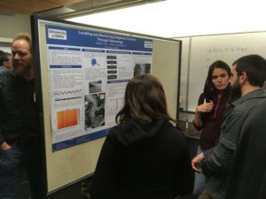

The UI Glacier Dynamics Group traveled to the annual meeting of Northwest Glaciologists in mid-October to present their latest research and share ideas with other regional glaciologists. Univ. of Idaho grad students Margot Vore and Tristan Amaral made excellent presentations of their latest work. Colleagues at the University of British Columbia and Simon Fraser University were wonderful hosts, and Vancouver, BC, treated us to glorious weather. We're looking forward to future years of this favorite gathering of the minds.

